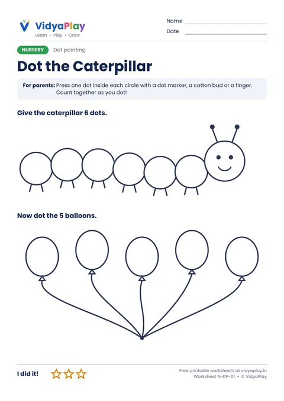
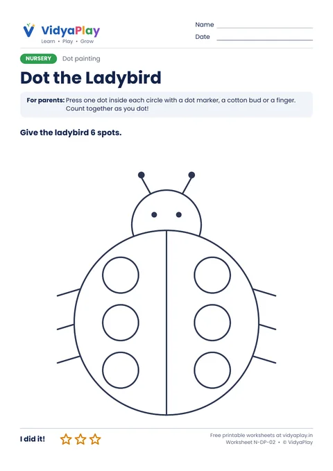
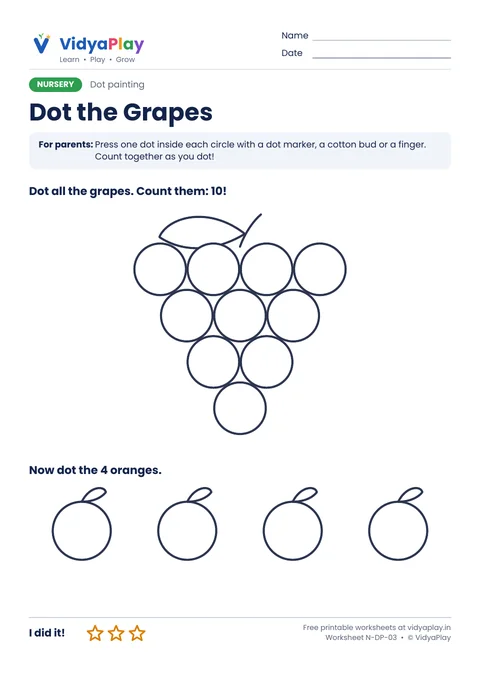
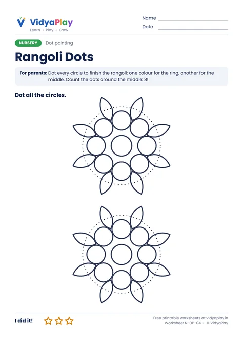

Dot Painting Worksheets
Big circles to dot with a dot marker, a cotton bud dipped in paint, or a fingertip. Great for little hands and counting.
Free · A4 PDF · Prints in black and white · Ages 2.5 to 4
All 4 dot painting sheets
Print them all for a messy, happy week.
-

N-DP-01Dot the Caterpillar
6 big dots, then 5 balloons.
Download PDF -

N-DP-02Dot the Ladybird
Give the ladybird 6 spots.
Download PDF -

N-DP-03Dot the Grapes
10 grapes and 4 oranges to dot.
Download PDF -

N-DP-04Rangoli Dots
Finish two rangolis with dots.
Download PDF
Tips for parents
- Dot markers, a cotton bud or a fingertip all work.
- Count out loud with each dot.
- Put old newspaper under the sheet!